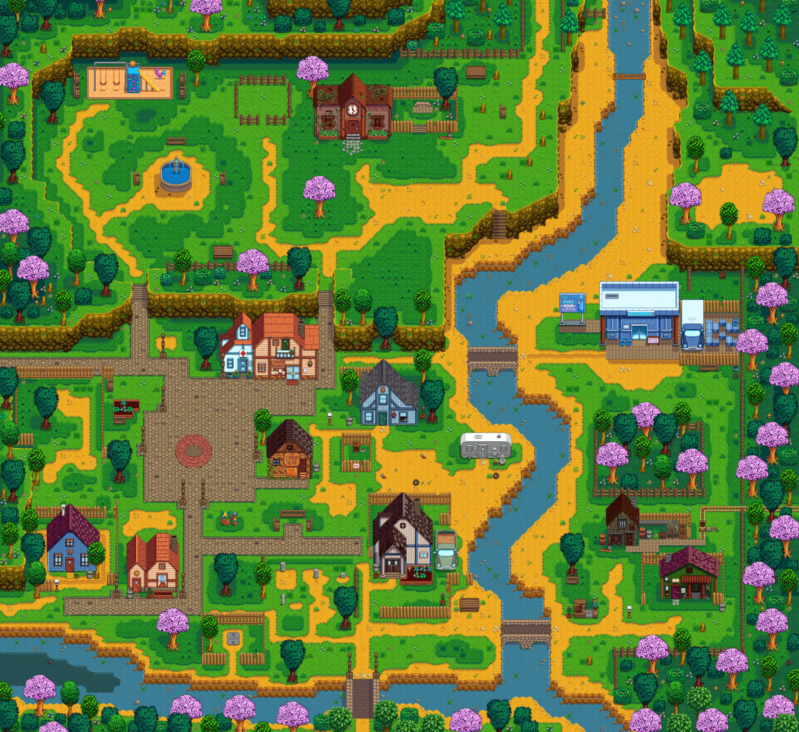

villagers
Meet Your Community
Villagers are characters in Stardew Valley. They are citizens who live in and around Pelican Town. Each villager has a daily routine, so they can be located in different sections of town depending on the in-game time of the day. Villagers provide quests and can be given gifts to increase affection. Each villager has unique likes and dislikes, and will respond to gifts differently.

A map of the villagers' houses in Pelican Town.
Friendship can be earned with Pelican Town's villagers. As friendships deepen, the villagers' dialogue lines become more friendly, cut-scenes called heart events occur, villagers are more likely to send gifts in the mail, and marriage is possible with one of the datable villagers.